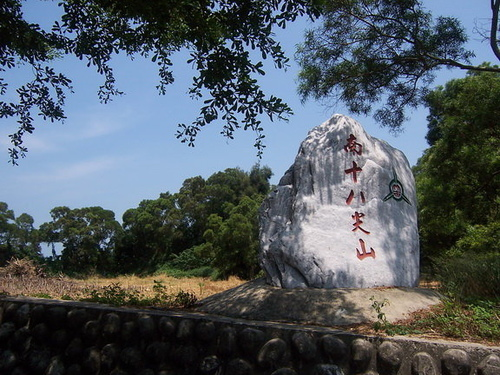
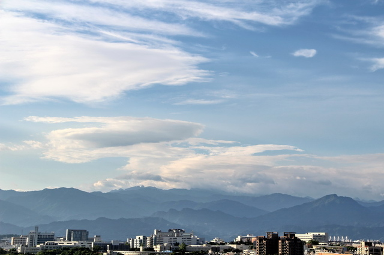

<十八尖山> 陳朝龍
竹邑鍾靈秀，層巒十八環，來龍綿五指，垂象擬三山。
地想登瀛勝，松疑入夢閒。洞天符半數，羅漢列全班。
紀瑞呼嵩屢。言遊歷級還。峰增巫峽算，曲並武夷攀。
雉堞臨城市，螺痕聳髻鬟。名公方載筆，累牘不須刪。
陳氏此詩先形容十八尖山之形勢，再寫其山林之勝與景趣之佳，甚為貼切難得。

現今十八尖山的風采
十八尖山位於新竹市東區，東接粟仔埔，西止於土地公坑。是呈現新月的形狀，蜿蜒約七、八里， 環抱著新竹市東、南郊，由於十八個峰頭連綿而成因而得名，屬於丘陵的地形。台灣小百岳編號為026號（舊版為028號）位於新竹市，為新竹市內的最高峰。 十八尖山山峰多在100公尺左右，最高處是131.79公尺，最低處為50公尺，平均坡度為40%。最高 休憩地方在介壽亭附近，標高128.9公尺。從十八尖山的山頂上遠眺，西北向可望見新竹市區街道景色，右邊是頭前、鳳山二溪，正前方是台灣海峽，也可向東南面瞭望大霸尖山、清泉五指山群峰與竹東方向流貫而來的頭前溪，視野廣闊，風景宜人。 其中，舊稱虎頭山的十八尖山的西峰，以其「瑞圓肥厚，高聳壯麗」，形狀與虎頭相似而得名，高110餘公尺。